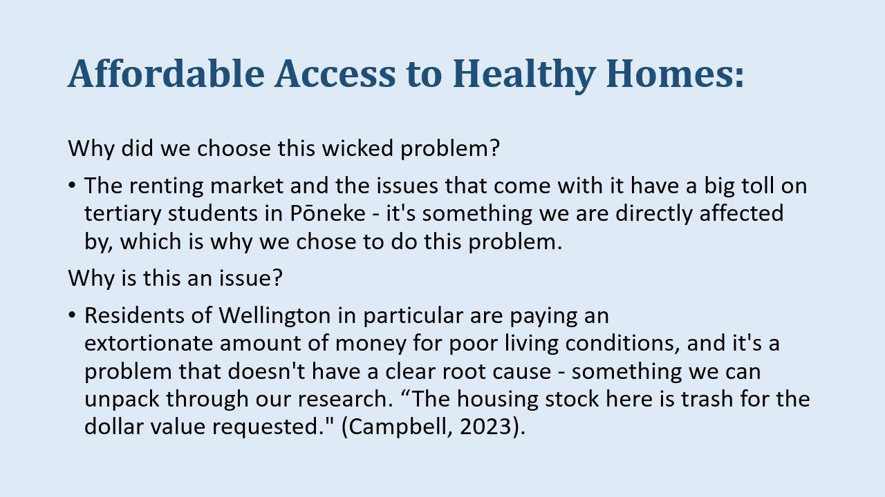
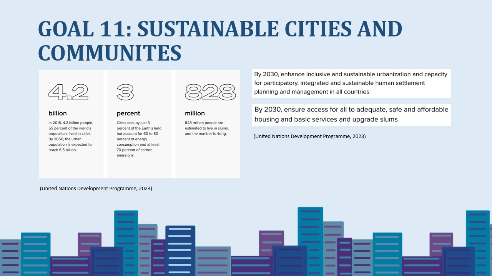
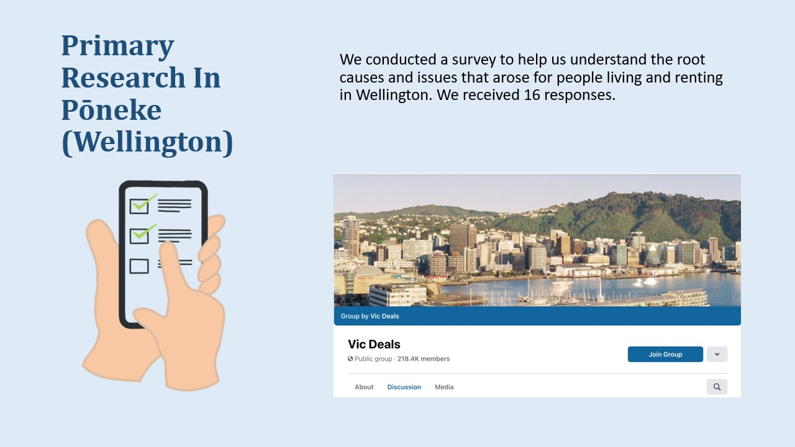
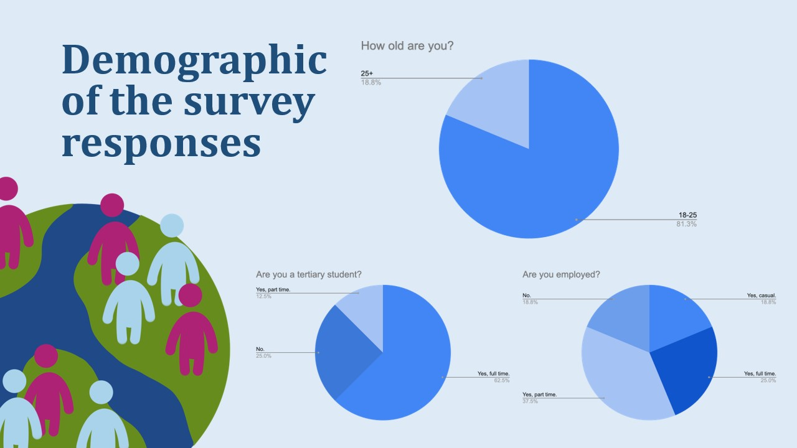
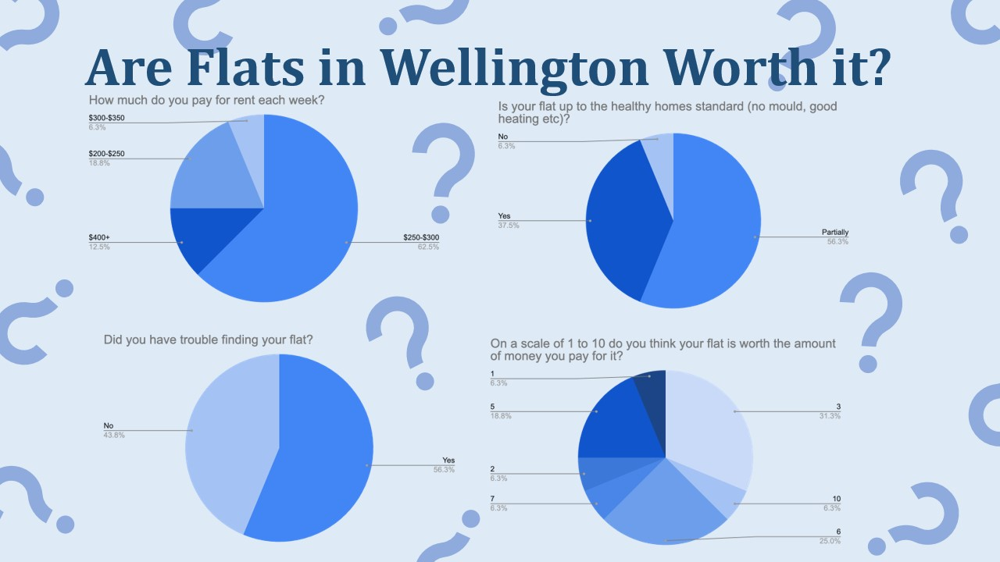
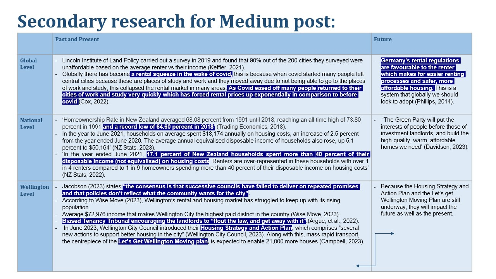
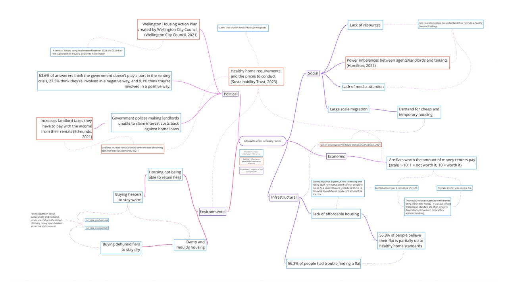
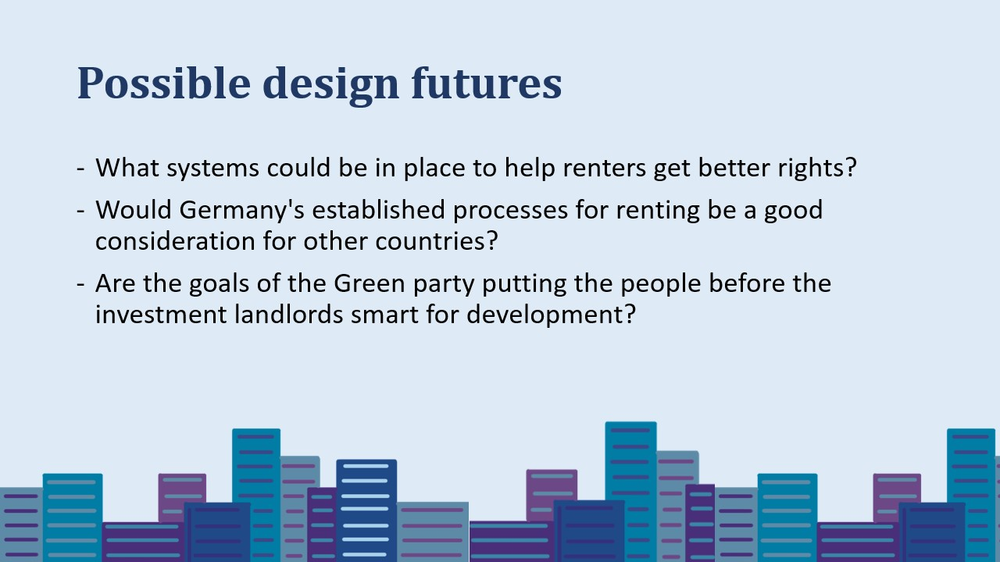
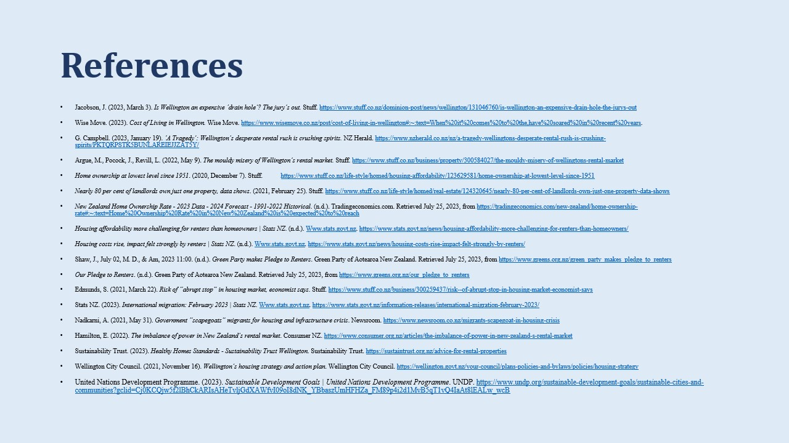

Visioning, Backcasting, and Assessing the Present:
Affordable Access to Healthy Homes.
A Presentation for Design in Transition, created to support a medium article. Co-written with Isla Hunt and Kasey Wright.
Read the Medium Article Here: https://medium.com/@newlanhann/affordable-access-to-healthy-homes-in-wellington-538ffaf5e288
17.1% of renters in Aotearoa New Zealand right now are spending more 40% of their disposable income on household costs. “Affordable access” to us means renters not having to spend a huge portion of their income on housing costs, and “healthy homes” means at a minimum the house you are renting meets the healthy homes standard.
We felt it was important to choose this topic because of how everyone in our group can relate to experiencing this from our position as tertiary students. We focussed on renting because of the sheer amount of people in Wellington who are currently renting, as well as the fact that roughly 40% of the country’s population are renting too.
Our locally based wicked problem stems from a wider issue, affordable access to healthy homes across the world. This is under the Sustainable Development Goal: Sustainable Cities and Communities which was established and adopted by the United Nations.
The aims of this goal that we cover in our research into the Wellington based wicked problem are:
- Access to adequate, safe and affordable housing.
- More inclusive and sustainable urbanisation and capacity for participatory, integrated and sustainable human settlement planning and management in all countries.
(United Nations Development Programme, 2023).
The history of renting control goes back to Ancient Rome in 150 B.C. the landlord of a roman senator made the decision to double his rents, in reaction to this the senator appealed to the courts against his landlord. Since then there have been many developments in renting control all over the world. The first “fair rents” law was passed in Australia after the Labour party advocated for change in these areas, the bill was named the Fair Rents Act of 1915 and is considered to be the start of modern rent control (Willis, 1950).
The survey was posted on a well-known Wellington Facebook group called Vic Deals, with 218.4K members.
 
This is our initial miro board - created using our primary research/survey responses. It helped us form and understand the connections made between the issues, which we then expanded on and elaborated for our final miro board.

Our original spatio-temporal matrix was formed using research independent of the research we did for our Medium article. It was then used as inspiration for that medium research - providing points to make and information to share within the article.
Our secondary research was put into a matrix as well to visually understand the levels each part of the problem affects, as well as what the future could look like on different scales.
This slide consists of a map that analyses the links between our survey responses and secondary research we found. Social issues found include power imbalances between landlords/agents and tenants. During the application process applicants feel compelled to provide additional, unnecessary information about their personal lives, thinking it helps with the rental process (Hamilton, 2022). Large-scale migration has driven up demands for cheap and temporary housing, with an annual net gain of 52,000 immigrants over 2022 (Stats NZ, 2023; Nadkarni, 2021). This highlights infrastructural issues like the lack of affordable housing for renters. 56.3% of survey respondents had trouble finding a flat due to prices, as well as rentals not reaching healthy home standards. This formed a need to understand political issues. The government recently announced new rules so that landlords are unable to claim interest costs back against home loans, meaning they have to pay tax on all their rental income. A respondent claimed that with this rule, as well as other fees and requirements for healthy home standards, landlords “naturally” have to raise rent prices. Renters take issue with this as landlords will not maintain a standard of upkeep which manifests in mouldy damp homes that renters believe are not worth the amount of money they are spending. 56.3% of survey respondents believe their flat is partially up to healthy home standards, and on a scale of 1-10 relating to whether their flat was worth the money the most popular answer was 3. Many renters have to use dehumidifiers and heat pumps to ensure their home is warm and free of mould - this increases their power bill and has raised questions about how sustainable the rentals are. This is causing renters to struggle economically due to high rent and poorly managed rentals that need to be warmer and dryer. Lastly, there were complaints about a lack of media attention and help for tertiary students who are new to flatting, and no legislation to help them understand the renting world.
In phase 2-3 we will look further into what systems could be put in place to provide renters with affordable homes and improved rights while renting. It will be important for us to look further into solutions that have already been presented. For example Germany’s renting processes and how we could integrate this globally as well as diving further into the Green parties goals to put renters before landlords rental investments. An area to develop a design future within this wicked problem would be within the Government as they will be able to establish regulations for renters that will help improve their well-being.
